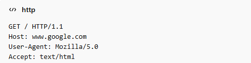
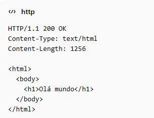

O HTTP (HyperText Transfer Protocol) é o protocolo que permite a comunicação entre o navegador (cliente) e o servidor na Web. Sempre que você acessa um site, seu navegador envia uma requisição HTTP, e o servidor responde com uma resposta HTTP (página, imagem, dados etc.).
O HTTP (HyperText Transfer Protocol) é o protocolo utilizado na Web para permitir a comunicação entre o navegador (cliente) e os servidores. Ele funciona por meio de um processo de requisição e resposta: quando o usuário digita um endereço no navegador, é enviada uma requisição HTTP ao servidor, que processa o pedido e retorna uma resposta com o conteúdo solicitado, como páginas, imagens ou dados. Esse funcionamento pode ser entendido como uma troca de mensagens, onde o cliente solicita e o servidor responde.

Detalhes dos campos: GET → método (busca dados) / → recurso solicitado (página inicial) HTTP/1.1 → versão do protocolo
Host → identifica o site User-Agent → navegador utilizado Accept → tipo de conteúdo esperado
Na prática, o funcionamento ocorre assim: o usuário acessa um site, o navegador envia uma requisição HTTP com informações como o método (por exemplo, GET, usado para buscar dados), o recurso solicitado (como “/index.html”) e a versão do protocolo (HTTP/1.1). Além disso, essa requisição contém cabeçalhos importantes, como Host (identifica o site acessado), User-Agent (informa o navegador e dispositivo) e Accept (indica o tipo de conteúdo esperado). O servidor então responde com uma mensagem HTTP que começa com uma linha de status, como HTTP/1.1 200 OK, indicando sucesso. Em seguida, são enviados cabeçalhos como Content-Type (tipo de conteúdo retornado, como HTML) e Content-Length (tamanho da resposta), além do corpo da mensagem, que geralmente contém o código da página exibida no navegador. Também existem outros métodos, como POST, utilizado para enviar dados (por exemplo, em formulários de login), e códigos de erro como 404 (página não encontrada) e 500 (erro no servidor). Dessa forma, o HTTP é essencial para o funcionamento da Web, pois é por meio dele que acontece toda a troca de informações entre usuários e sites.
